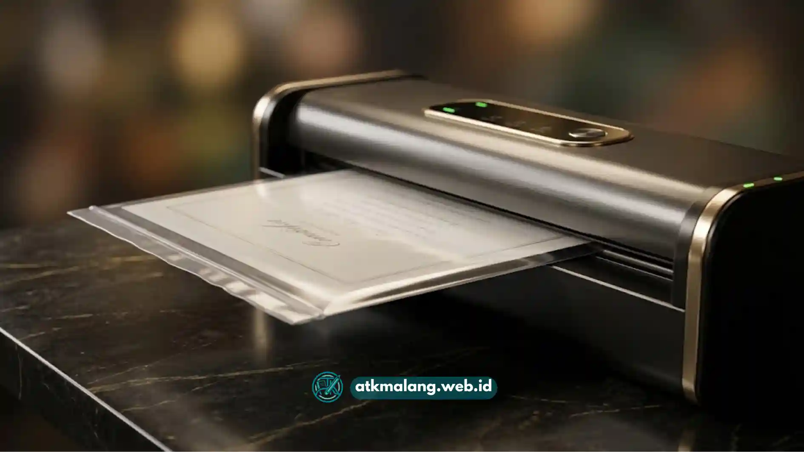

Laminating adalah proses melapisi kertas atau dokumen dengan lapisan plastik film menggunakan panas atau tekanan. Tujuannya melindungi dokumen dari air, debu, dan kerusakan fisik.
Banyak orang mengalami hasil laminating yang keriput, bergelombang, atau terdapat gelembung udara karena kesalahan sederhana saat pengoperasian mesin kantor.
Artikel ini membahas langkah-langkah aman menggunakan mesin laminating agar dokumen penting seperti ijazah, sertifikat, KTP, atau foto tetap rapi dan awet.
Daftar Isi
Apa Itu Mesin Laminating dan Bagaimana Cara Kerjanya
Mesin laminating bekerja dengan cara menjepit kertas di antara dua lapisan plastik film (pouch), kemudian menariknya melalui rol pemanas atau rol tekan.
Panas dari rol akan melelehkan lapisan perekat pada bagian dalam plastik film sehingga menempel erat pada permukaan kertas. Proses ini berlangsung dalam hitungan detik hingga beberapa puluh detik tergantung ukuran dan ketebalan plastik yang digunakan.
Ada dua jenis mekanisme utama pada mesin laminating yang perlu Anda pahami sebelum menggunakannya:
- Hot Laminating (Sistem Panas) — menggunakan elemen pemanas untuk melelehkan lem pada plastik. Jenis ini paling umum digunakan di kantor dan toko Alat Tulis Kantor.
- Cold Laminating (Sistem Dingin) — mengandalkan tekanan rol tanpa panas, biasanya menggunakan plastik dengan lapisan perekat sendiri (self-adhesive). Cocok untuk dokumen sensitif panas seperti foto termal.
Persiapan Sebelum Menggunakan Mesin Laminating
Sebelum mulai melaminating, ada beberapa hal penting yang perlu diperhatikan agar hasilnya maksimal dan mesin tidak cepat rusak.
Pertama, pastikan dokumen yang akan dilaminating dalam kondisi bersih, kering, dan bebas dari lipatan atau kerutan. Dokumen yang sudah terlipat sebelumnya cenderung tetap menampakkan bekas lipatan setelah dilaminating.
Kedua, pilih ukuran plastik pouch yang sesuai dengan ukuran dokumen. Sisakan margin sekitar 2–3 milimeter di setiap sisi agar plastik menutup sempurna.
Ketiga, nyalakan mesin dan tunggu hingga indikator suhu menunjukkan mesin sudah siap digunakan — biasanya ditandai lampu indikator berubah warna atau menyala stabil.
Menggunakan mesin sebelum suhu kerja tercapai adalah penyebab paling umum hasil laminating yang keriput dan bergelombang. Lem pada plastik belum meleleh sempurna sehingga menempel tidak merata pada permukaan dokumen.
Langkah-Langkah Menggunakan Mesin Laminating dengan Aman
Setelah persiapan selesai, ikuti tahapan penggunaan mesin laminating secara berurutan berikut ini untuk mendapatkan hasil terbaik.
Masukkan Dokumen ke Dalam Pouch
Posisikan dokumen tepat di tengah plastik pouch. Rapatkan sisi terbuka agar dokumen benar-benar berada di dalam kantong plastik tertutup rapat.
Gunakan Carrier Jika Diperlukan
Gunakan carrier atau kertas pelindung tambahan jika mesin dilengkapi aksesori tersebut, terutama untuk dokumen tipis atau kecil seperti KTP agar tidak mudah bergeser saat ditarik rol.
Masukkan dengan Sisi Tertutup Lebih Dulu
Masukkan plastik pouch ke mesin dengan posisi sisi tertutup (lipatan pabrik) masuk lebih dulu, bukan sisi yang terbuka. Ini mencegah udara terjebak di dalam pouch.
Dorong Perlahan dan Lurus
Dorong pouch secara perlahan dan lurus, jangan miring, agar rol menarik plastik secara merata dari kedua sisi. Setelah rol mulai menarik otomatis, lepaskan dan biarkan mesin bekerja.
Biarkan Dingin Sebelum Ditumpuk
Setelah plastik keluar sepenuhnya, letakkan di permukaan datar dan biarkan dingin beberapa detik sebelum disentuh atau ditumpuk. Menumpuk hasil laminating saat masih panas berisiko membuat plastik saling menempel.
Kesalahan Umum yang Membuat Hasil Laminating Tidak Rapi
Banyak pengguna pemula mengalami hasil laminating yang kurang memuaskan karena kesalahan berikut yang sebenarnya mudah dihindari.
- Mesin belum mencapai suhu kerja — Selalu tunggu indikator kesiapan menyala sebelum memasukkan pouch.
- Pouch dimasukkan miring atau tidak sejajar — Menyebabkan dokumen bergeser dan hasil tampak tidak simetris.
- Plastik pouch terlalu tebal untuk kapasitas mesin — Plastik tidak menempel sempurna atau bahkan macet di dalam mesin. Selalu sesuaikan ketebalan pouch dalam mikron dengan spesifikasi mesin.
- Menarik paksa dokumen yang tersangkut — Sangat berisiko merusak rol pemanas dan berpotensi menyebabkan korsleting. Matikan mesin terlebih dahulu, biarkan dingin, kemudian keluarkan perlahan.
Jika dokumen tersangkut di tengah proses laminating, jangan pernah menariknya paksa. Matikan mesin, tunggu dingin, lalu keluarkan dokumen secara perlahan. Periksa panduan mesin untuk prosedur pembebasan dokumen macet yang tepat.

Pastikan sisi tertutup pouch (lipatan pabrik) selalu masuk terlebih dahulu ke dalam mesin laminating untuk mencegah gelembung udara.Tips Merawat Mesin Laminating agar Tetap Awet
Merawat mesin laminating dengan rutin akan memperpanjang usia pakai dan menjaga kualitas hasil laminating tetap optimal.
- Bersihkan bagian rol secara berkala menggunakan kertas pembersih rol (cleaning sheet) khusus untuk menghilangkan sisa lem yang menempel.
- Matikan mesin dan cabut dari sumber listrik setelah selesai digunakan, terutama untuk mesin hot laminating yang elemen pemanasnya menyimpan suhu tinggi.
- Simpan mesin di tempat kering dan hindari paparan debu berlebih, karena debu yang masuk ke celah rol dapat mengganggu kehalusan hasil laminating.
- Jangan biarkan mesin menyala dalam keadaan standby terlalu lama tanpa digunakan, untuk menghemat daya dan memperpanjang usia elemen pemanas.
Untuk kebutuhan pengadaan mesin kantor dalam jumlah banyak, ATKMalang siap membantu dengan harga grosir terbaik.
Memilih Ketebalan Plastik Sesuai Kebutuhan Dokumen
Plastik laminating tersedia dalam berbagai ketebalan, umumnya berkisar antara 75 hingga 250 mikron. Memilih ketebalan yang tepat mempengaruhi daya tahan dan kekakuan hasil laminating.
| Ketebalan | Cocok Untuk | Keterangan |
|---|---|---|
| 75 mikron | Dokumen arsip, surat biasa | Tipis, fleksibel, hemat biaya |
| 100–125 mikron | Ijazah, sertifikat, foto | Standar umum, cukup kaku |
| 150 mikron | KTP, kartu nama, kartu pelajar | Lebih kaku, tahan tekukan |
| 175–250 mikron | Menu restoran, kartu instruksi | Sangat kaku, sangat tahan lama |
Dokumen yang sering dipegang atau digunakan sehari-hari seperti kartu identitas dan menu cetak umumnya membutuhkan ketebalan lebih tinggi agar tahan lama.
Dokumen arsip yang jarang dipegang langsung dapat menggunakan ketebalan standar yang lebih tipis untuk menghemat biaya.
Menggunakan mesin laminating yang aman intinya terletak pada tiga hal: kesabaran menunggu suhu kerja tercapai, posisi pouch yang benar (sisi tertutup lebih dulu), dan perawatan rutin pada bagian rol. Dengan mengikuti langkah-langkah di atas, risiko dokumen keriput atau bergelembung dapat diminimalkan sekaligus memperpanjang usia pakai mesin.